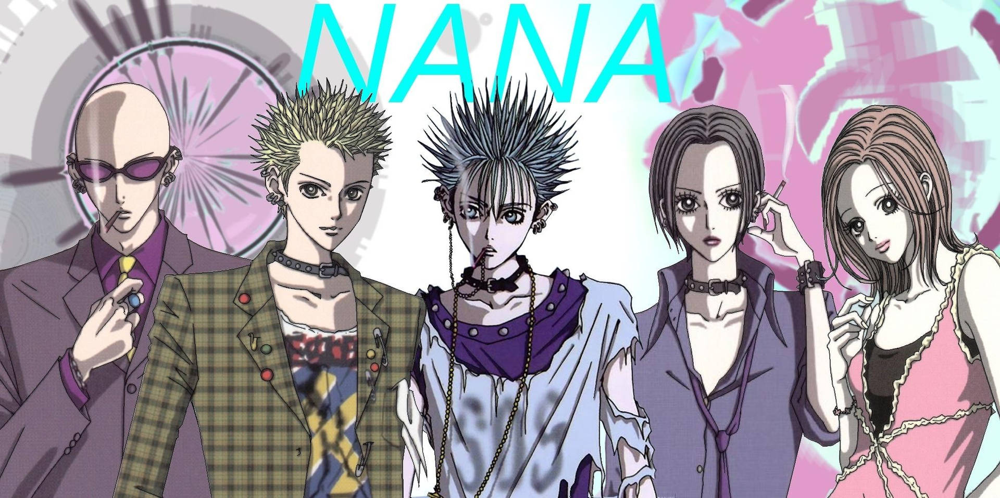
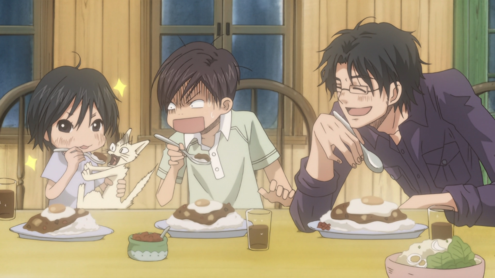
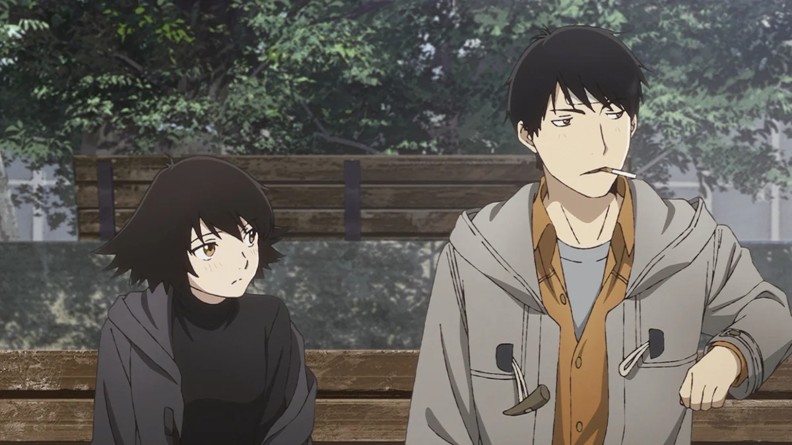
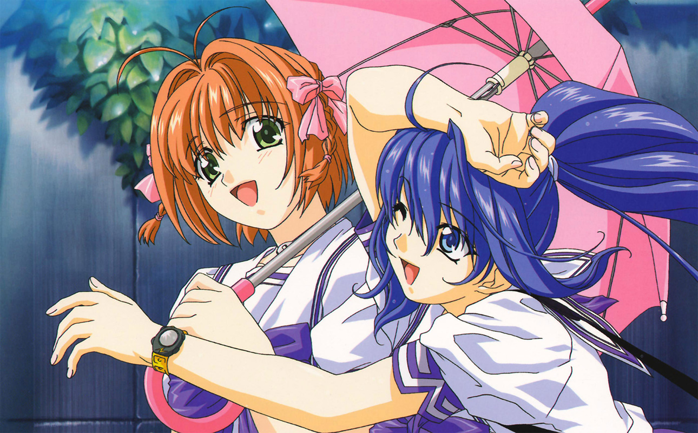
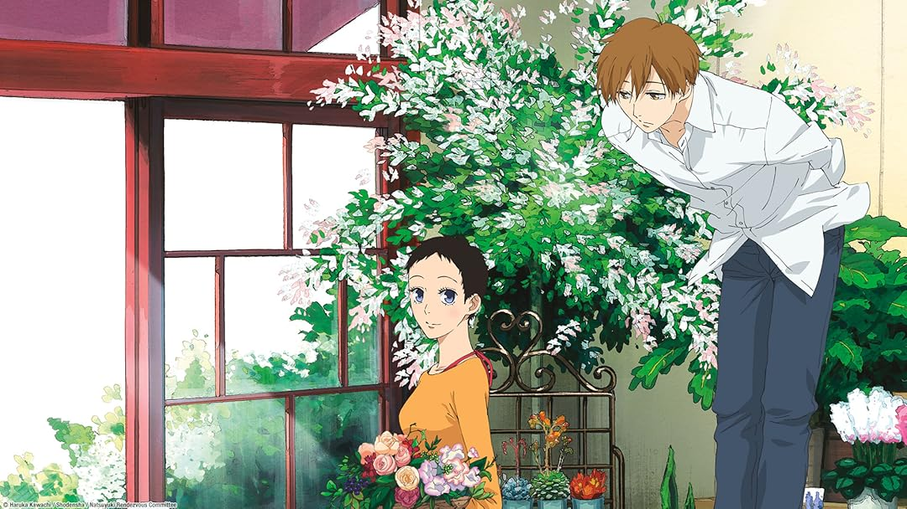
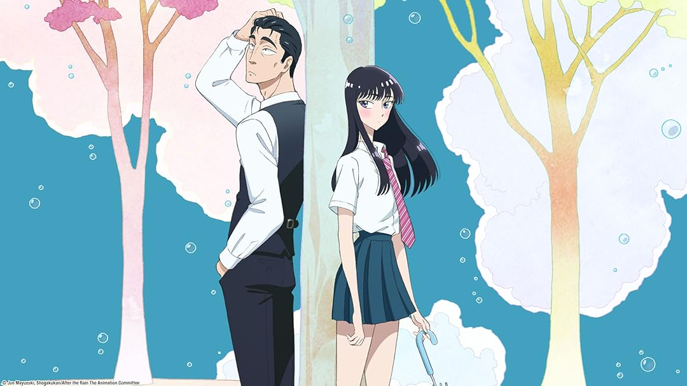
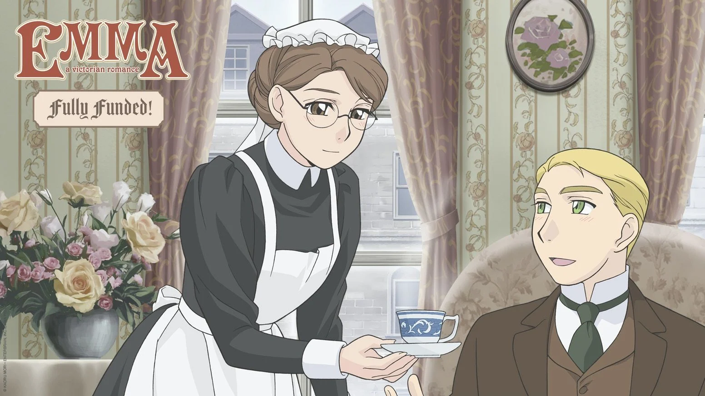
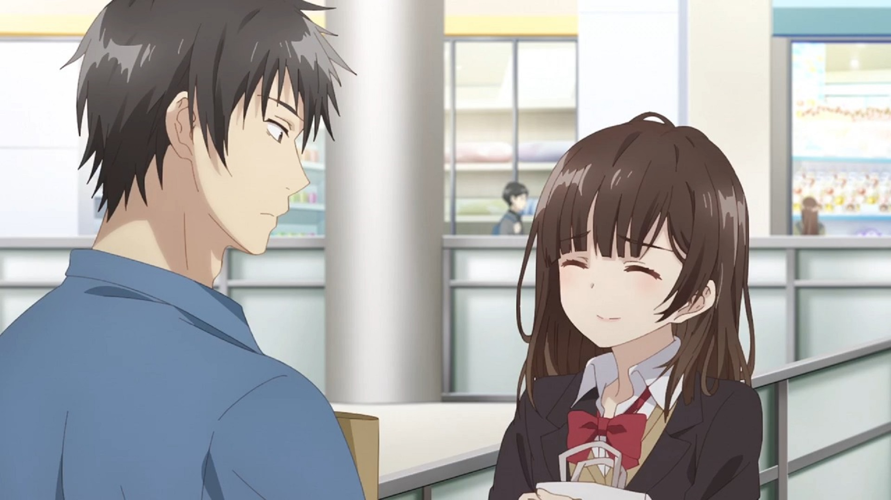

SMASH Senpai
Top 10 Realistic Romance Anime That Feel Painfully Real (No Fairy Tales)
Not every love story is beautiful. Some are awkward, uncomfortable, messy, and painfully honest.
Realistic romance anime strip away fantasy and exaggeration. There are no destiny promises, no perfect timing, and no guaranteed happy endings. Just people — flawed, confused, and emotionally vulnerable.
These stories focus on adult emotions, unspoken feelings, missed chances, emotional baggage, and relationships that don’t always work out the way we hope. Love here feels heavy — because it’s real.
Instead of escapism, these anime reflect real-life romance: the hesitation before confessing, the pain of moving on, the fear of choosing the wrong person, and the quiet moments that hurt the most.
If you’re tired of fairy-tale romances and want anime that feels grounded, raw, and emotionally honest, these are the Top 10 Realistic Romance Anime that hit close to home — and stay with you long after they end.
Sponsored
#1 Nana
Nana is not a romance anime meant to make you feel safe. It’s meant to make you feel understood. This series follows two women who share the same name — Nana — but live completely different lives, connected by love, heartbreak, ambition, and emotional dependence.
Romance in Nana is messy, impulsive, and often self-destructive. Characters fall in love not because it’s healthy, but because they’re lonely, insecure, or desperate to feel chosen. Relationships form quickly, break painfully, and leave scars that don’t fade easily.
What makes Nana painfully realistic is how it portrays emotional immaturity. People hurt each other without intending to. They stay in relationships they know are wrong. They confuse love with attachment and passion with stability. No one is purely right or wrong — just human.
The anime doesn’t romanticize suffering. It shows how love can limit dreams, derail goals, and trap people in cycles they don’t know how to escape. Careers, friendships, and self-worth are constantly sacrificed in the name of romance.
Nana feels real because it refuses to give answers. Love doesn’t fix people here. Sometimes it breaks them.
- Episode count: 47
- Genre: Romance, Drama, Slice of Life
- Known for: Emotional realism, adult relationships
- Core theme: Love, identity, and emotional dependency

play anime smash or pass here (not sponsored)
SMASH SENPAI – Smash or Pass#2 Honey and Clover
Honey and Clover captures the quiet pain of loving someone who will never love you back. Set during college years, the anime explores romance not as excitement, but as emotional confusion during a time when nothing feels certain.
Love here is unbalanced. Feelings go unreturned. Confessions don’t lead to closure. Characters hold onto emotions long after they know there’s no future. It’s not dramatic heartbreak — it’s slow, lingering disappointment.
What makes Honey and Clover realistic is how romance blends into daily life. Feelings don’t pause deadlines, career anxiety, or personal insecurity. Characters must choose between emotional comfort and personal growth — and those choices hurt.
The anime also explores how timing ruins love. Someone realizes their feelings too late. Someone else moves on too early. Nobody is wrong — they’re just out of sync.
Honey and Clover isn’t about winning love. It’s about learning when to let go. And that lesson hurts more than rejection.
- Episode count: 36 (2 seasons)
- Genre: Romance, Slice of Life, Drama
- Known for: Unrequited love, emotional maturity
- Core theme: Letting go and self-discovery
Sponsored
#3 Paradise Kiss

Paradise Kiss explores a type of romance that feels exciting at first — then quietly destructive. It tells the story of a young woman pulled into a glamorous world where love feels intense, intoxicating, and dangerously consuming.
The relationship at the center is passionate, but unstable. Attraction replaces communication. Control masquerades as confidence. Emotional distance is disguised as maturity. The anime never pretends this kind of love is healthy.
What makes Paradise Kiss realistic is how it shows emotional imbalance. One partner always holds more power. Decisions are made without discussion. Love becomes something you endure rather than enjoy.
The series also tackles the fear of growing up. Choosing love often means abandoning dreams. Choosing independence means walking away from someone you still care about. Neither option feels right.
Paradise Kiss doesn’t glorify toxic romance. It exposes it — showing how easily passion can turn into emotional exhaustion.
- Episode count: 12
- Genre: Romance, Drama, Josei
- Known for: Toxic relationships, emotional realism
- Core theme: Love versus self-worth
#4 Sing “Yesterday” for Me
Sing “Yesterday” for Me is a romance about emotional stagnation. It follows characters stuck between who they were and who they’re supposed to become. Love here isn’t exciting — it’s heavy, confusing, and filled with hesitation.
The relationships feel painfully real because nobody knows what they want. Characters cling to the past, settle for emotional comfort, or chase feelings they don’t fully understand. Romance becomes something that delays growth instead of encouraging it.
What makes this anime stand out is how passive its love feels. People wait instead of act. They hope instead of communicate. Emotional distance builds not from malice, but from fear — fear of rejection, change, and adulthood.
The anime also explores imbalance. One character loves more. One character waits longer. One character moves on while another remains stuck. No one is cruel — just emotionally unavailable.
Sing “Yesterday” for Me hurts because it reflects real life. Sometimes, love doesn’t fail dramatically. It simply fades because no one moves forward.
- Episode count: 12
- Genre: Romance, Drama, Slice of Life
- Known for: Emotional inertia, quiet heartbreak
- Core theme: Being stuck between past and future
Sponsored
#5 Rumbling Hearts
Rumbling Hearts is romance at its most devastating. It tells a story where one tragic moment permanently alters every relationship that follows. Love here isn’t just emotional — it’s traumatic.
The anime explores what happens when guilt becomes the foundation of love. Characters stay together not because they’re happy, but because they feel responsible. Romance becomes an obligation, weighed down by regret and unresolved pain.
What makes Rumbling Hearts realistic is how it portrays emotional damage. People lie — not to deceive, but to survive. Feelings change, loyalties fracture, and everyone loses something no matter what choice is made.
The love triangle at the center isn’t exciting or dramatic — it’s suffocating. Every decision hurts someone. Every confession creates guilt. Happiness feels undeserved.
Rumbling Hearts doesn’t offer comfort. It shows how love, when mixed with trauma, can permanently scar everyone involved.
- Episode count: 14
- Genre: Romance, Drama, Psychological
- Known for: Emotional trauma, tragic realism
- Core theme: Guilt, loss, and irreversible choices
#6 Natsuyuki Rendezvous
Natsuyuki Rendezvous is a romance about loving someone who is still holding onto the past. It follows a quiet, mature relationship complicated by grief, memory, and emotional attachment that hasn’t faded.
The female lead is a widow unable to fully let go of her late husband. Her love life isn’t blocked by lack of interest — it’s blocked by loyalty to someone who no longer exists. Romance becomes a delicate negotiation with grief.
What makes this anime realistic is how respectfully it treats loss. Grief isn’t something you overcome. It’s something you learn to live alongside. Loving again doesn’t erase the past — it challenges it.
The presence of the deceased husband creates emotional tension without melodrama. There’s no villain. No wrongdoing. Just unresolved love competing with new feelings.
Natsuyuki Rendezvous shows that mature romance isn’t about replacing love — it’s about finding space for it to exist again.
- Episode count: 11
- Genre: Romance, Drama, Supernatural
- Known for: Widowhood, emotional maturity
- Core theme: Grief and moving forward
Sponsored
#7 After the Rain
After the Rain is a romance built on restraint. It explores feelings that exist quietly, carefully, and often unspoken. Rather than dramatic confessions, the anime focuses on emotional awareness and self-reflection.
The story follows a teenage girl who develops feelings for her middle-aged manager. On paper, it sounds controversial — but the anime never crosses lines. Instead, it treats the situation with maturity, caution, and empathy.
What makes After the Rain realistic is its understanding of boundaries. Love doesn’t always demand action. Sometimes, recognizing what *shouldn’t* happen is more important than chasing feelings.
Both characters are broken in different ways. One is stuck in the past. The other is afraid of the future. Their connection becomes less about romance and more about healing, encouragement, and emotional honesty.
After the Rain isn’t about romance fulfilled — it’s about feelings acknowledged and handled responsibly. That emotional maturity is what makes it unforgettable.
- Episode count: 12
- Genre: Romance, Drama, Slice of Life
- Known for: Emotional restraint, mature themes
- Core theme: Respecting boundaries
#8 Emma: A Victorian Romance
Emma: A Victorian Romance is love constrained by society. Set in 19th-century England, the anime explores how class, reputation, and tradition can suffocate genuine feelings.
The romance between Emma, a quiet maid, and William, a wealthy gentleman, is gentle and sincere — yet constantly threatened by social expectations. Their love isn’t forbidden by hatred, but by polite cruelty and silent judgment.
What makes Emma realistic is its patience. Characters hesitate. They consider consequences. Love isn’t pursued recklessly — it’s weighed against family, duty, and personal sacrifice.
The anime avoids melodrama. Instead, heartbreak arrives through formality — polite smiles, unspoken words, and decisions made because society demands them.
Emma proves that realism doesn’t require modern settings. Love restricted by circumstance can be just as painful — and just as human.
- Episode count: 24 (2 seasons)
- Genre: Romance, Drama, Historical
- Known for: Class divide, emotional restraint
- Core theme: Love versus social obligation
#9 REC

REC is a short, grounded romance about working adults navigating love alongside careers. It skips school settings entirely and focuses on emotional realism.
The relationship forms quickly, but not unrealistically. Two adults meet, connect, and choose to be together — not because of destiny, but compatibility. Love feels casual, awkward, and imperfect.
What makes REC stand out is how normal it feels. Characters argue. Misunderstandings happen. Careers interfere. Romance isn’t idealized — it’s treated as part of adult life, not the center of it.
The anime also explores independence. Neither character exists solely for the other. They have ambitions, insecurities, and personal goals that sometimes clash.
REC proves that romance doesn’t need tragedy or fantasy to be engaging. Sometimes, realism alone is enough.
- Episode count: 9 (short episodes)
- Genre: Romance, Slice of Life
- Known for: Adult setting, grounded tone
- Core theme: Love alongside career
#10 Higehiro
Higehiro is not a romance about instant love. It’s about recovery. Trauma. And learning how to be treated like a human being again.
The story begins with a morally sensitive premise, but quickly reveals its true focus — emotional healing. The relationship develops slowly, built on trust, safety, and patience.
What makes Higehiro realistic is its refusal to rush intimacy. The characters don’t fall in love because they’re lonely — they grow closer by understanding boundaries and respecting emotional wounds.
Trauma isn’t romanticized. Healing is messy. Progress is uneven. Love becomes something earned, not taken.
Higehiro shows that realistic romance isn’t always about chemistry — sometimes, it’s about giving someone the space to heal.
- Episode count: 13
- Genre: Romance, Drama, Psychological
- Known for: Trauma recovery, emotional realism
- Core theme: Healing before love
Play Smash or Pass on SMASH Senpai.
 PLAY SMASH OR PASS
PLAY SMASH OR PASS